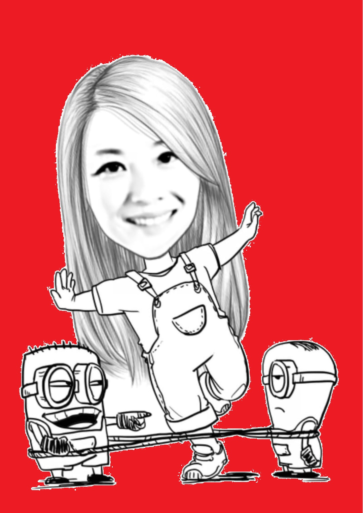

She Codes Plus 2022 Cohort | Early Childhood Educator
Former
ICT Professional | Rebooting my IT career
Originally from the tropical paradise of Mauritius, I started my career in the Tech world as a software developer and built my skills and competencies through a horizontal progression approach.